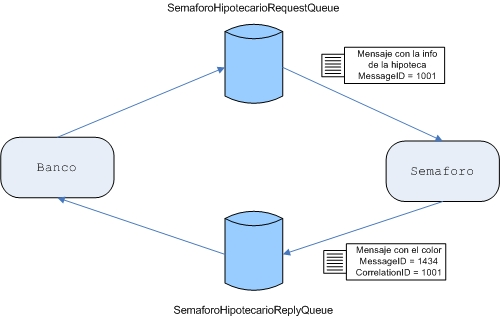

Ejercicios de Message Driven Beans
Semáforo MDB (1p)
Ahora queremos que el semáforo se implemente mediante un MDB. Para ello, dentro de la aplicación EAR creada en la sesión anterior, crearemos el proyecto jms-semaforo-mdb, que será un proyecto de tipo EJB.
Dentro del proyecto crearemos un MDB que nombraremos como SemaforoMDB, el cual se encargará únicamente de sacar el color por la consola.
Semaforo MDB Pregunta al Consultor (1p)
A continuación, modificaremos el MDB para seguir todas las restricciones impuestas en los ejercicios anteriores, como que solo reciba mensajes de bancos, manteniendo el envío de mensajes al consultor externo en el caso de que SemaforoBR devuelva Naranja, pero teniendo en cuenta la gestión de transacciones que realiza el MDB, etc...
Recuerda crear y destruir la conexión JMS con el consultor mediante los métodos del MDB anotados con @PostConstruct y @PreDestroy.
Semáforo MDB Responde al Banco (1p)
Modificar el proyecto anterior para que, además de sacar el color por consola, responda con el color en una nueva cola SemaforoHipotecarioReplyQueue.
A su vez, se debe modificar el EJB creado en la sesión anterior, de modo que una vez enviado el mensaje, se quede a la escucha en esta nueva cola durante 1 segundo (consumición síncrona). El EJB del banco devolverá el color recibido, o null si no ha recibido nada durante ese segundo.
Para que el EJB no escuche mensajes de un banco diferente, utilizaremos las propiedades JMS MessageID y CorrelationID. Para ello, cuando el MDB responda al mensaje debe poner como CorrelationID del mensaje de respuesta, el MessageID del mensaje de origen. Es decir, cuando vayamos a enviar el color y creemos un mensaje de texto, haremos:
TextMessage respuesta = session.createTextMessage(color); respuesta.setJMSCorrelationID(mensajeRecibido.getJMSMessageID());
A su vez, en el banco, tras enviar el mensaje, cuando no quedemos a la espera durante un segundo, utilzaremos un selector de mensaje de modo que filtremos mediante el CorrelationID cuyo valor será el del MessageID del mensaje que desencadeno el MDB.
String filtro = "JMSCorrelationID = '" + message.getJMSMessageID() + "'"; MessageConsumer consumer = session.createReceiver(queueRespuesta, filtro); // A continuación, consumimos esperando un segundo
